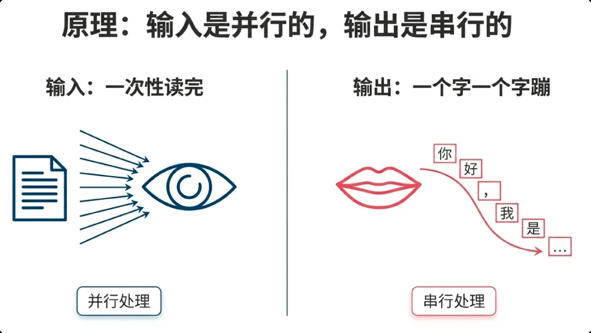

和使用者對賭的生意
不知道你有沒有這種感受：我們總想為使用者提供更好的 AI 服務，但在商業化層面，是和使用者在對賭——產品用得越好，使用者用得越多，利潤反而越薄。看到消費帳單的時候，不知道會不會窒息。
一個訂閱制 AI 產品的簡化帳本：會員費固定，Token 成本跟著用量走。拖動「人均日呼叫次數」，看看當使用者真的愛上你的產品時，帳本發生了什麼。
這就是「對賭」的含義：你的最忠誠使用者，同時是你成本表上最貴的一行。靠漲價和限流硬頂只是緩兵之計，真正的出路是讓每一次呼叫本身變便宜——這正是後面十二節要幹的事。
Token 的價格牌不是財務部門隨手定的，它精確反映了推理算力的邊際成本曲線：Prefill 與 Decode 的算力差異、KV Cache 的顯存佔用、長上下文的注意力開銷。所以每一條定價規則背後，都藏著一條給工程師的暗語：
💰它是帳單
每百萬 Token 幾塊錢，乘上呼叫量就是月帳單。千萬級呼叫下，10% 的浪費就是一個人的工資。
⚡它是延遲
輸入越長，Prefill 越久，首字延遲越高。使用者還沒看到第一個字，耐心可能已經消磨沒了。
🧠它是品質
上下文塞得越滿，有效資訊越容易被廢話淹沒。高訊雜比 = 高智慧，省 Token 常常順帶提升效果。

定價即架構（第 1–3 節）
Token 是怎麼數出來的、中文為什麼天生貴、報價表怎麼讀出 T0 / T1 / T2 三個梯隊。
三大跳檔陷阱（第 4–6 節）
GLM 的 200 Token 輸出斷崖、Qwen 的 32k 輸入紅線、圖片的 32 畫素對齊稅。價格跳變的邊界線，就是架構設計的紅線。
Agent 的帳單（第 7–8 節）
迴圈執行讓 Input 累積膨脹，I/O Ratio 高達 62:1；四大成本陷阱與熔斷機制。
四層實戰優化（第 9–12 節）
語法層砍格式稅、語義層做雙重蒸餾、架構層保 KV Cache 命中、輸出層管住模型的嘴。
收官（第 13 節）
省 Token 的本質是提高資訊密度。附 18 份按主題分類的延伸閱讀。
AI 商業化是和使用者的對賭。固定收費 + 按量成本的組合下，最忠誠的使用者就是最貴的使用者。
Token 成本三重身份：帳單、延遲、品質。省 Token 不是摳門，是同時優化三件事。
定價即架構。價格牌反映算力成本曲線，讀懂它，把應用設計到便宜的那一側。
內容來源：本章整理自作者的團隊內部分享《AI Token 降本增效策略分享》（2026）。文中價格均為作者當時拿到的折後價，僅用於演示計算方法，實際請以各廠商官網即時報價為準。